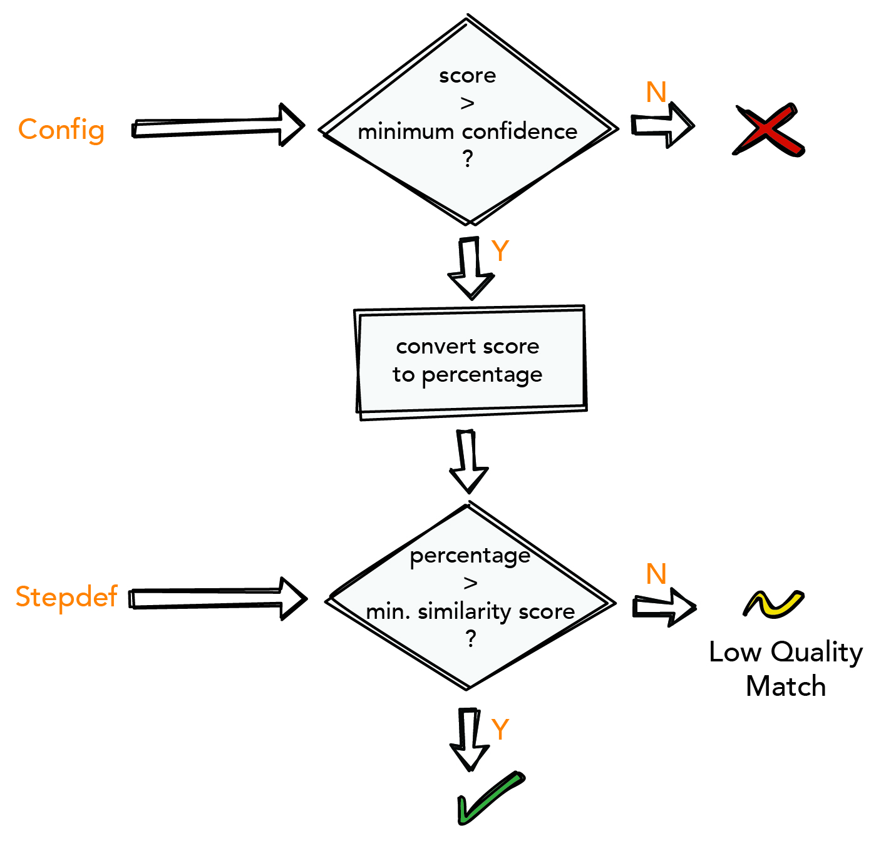

Automated Announcement Verification with the INTACT Audio Plugin
Verifying the content of audio recordings is often time-consuming and prone to human error and technical interference. Manually comparing audio recordings to reference files inherently conflicts with the goal of fully-automated testing. At QiTASC, we’ve developed an Audio Plugin, which solves this problem. The Audio Plugin’s audio fingerprinting feature automates the task of verifying a recording, such as the announcement played when a caller dials a blocked number. This audio recording is then matched against a database of reference files and looks for a best match.
Audio verification – or audio matching is suitable for projects that test:
- IVR systems
- Audio announcements
- Network operator messages
We spoke with one of our developers about this new feature to find out more about how it works and how audio fingerprinting has made life much easier for test engineers who need to verify audio quality and content. Here’s what they had to say:
The Drawbacks of Manually Verifying Audio Recordings
While INTACT has always been able automate call flows, including complex scenarios that involve multiple parties, call transfers or network rejections, addressing test scenarios that included audio announcements was another issue. These announcements may be in several different languages to account for subscriber preferences and location, and sometimes more than one announcement might even be played. Verifying the content of these audio announcements previously required the tester to manually listen to the audio recording playback and check it against a reference list that described announcements and mapped them to their applicable scenarios.
The manual approach to verifying audio announcements isn’t just time-consuming: It is prone to human error. When verifying recordings “manually,” poor sound quality and background noise can potentially make it difficult to discern an audio recording’s content, requiring a test to be re-run. Foreign language announcements can be very tricky to verify if testers are not fluent in that language. These time and skill-related limitations pose a risk to a project’s accuracy and its ability to meet its targets.
By developing the audio fingerprinting feature, files can now be automatically compared to each other within test cases, while setting confidence levels as needed to filter for best matches.
Why Use Automated Audio Matching?
The INTACT Audio Plugin’s setup involves a Raspberry Pi, which is connected to a phone through a USB sound card using a special audio cable. Each Raspberry Pi runs the AudioService. The Match Audio Step and Step Detail enables the user to access recordings of audio announcements that are played during a test case. Then the recordings are then compared against a reference file to look for the best match based on their audio fingerprint.
A reference file is a .wav recording of an announcement in 8 kHz mono. Each recording has a unique “fingerprint,” which enables it to be compared against all other audio recordings and yield a similarity score based on each file’s fingerprints. When executing a test case that includes the match audio step, INTACT searches a database for the best match according to tolerance parameters that are set in the Audio Matcher Configuration. INTACT then returns the most likely candidate – if any – which will always be the closest match.
Using the match audio step has several benefits, including:
- Audio recordings are of a much higher quality due to the Audio Plugin setup. The current setup reduces distortion significantly in both the sound recorded from a call and the reference files.
- The
Match audiosteps cut down on the time and effort required to review and assess recordings against their reference files because they no longer need to be manually reviewed. Of course, for quality assurance purposes, users may still manually compare the files. - Fidelities are based on set thresholds: The closer the fingerprint is to the reference recording, the higher the quality. This means announcements can be tested not just for matching content, but also for audio quality.
- Language issues, including recordings of foreign languages, are no longer a problem because of the audio fingerprint’s accuracy.

How Can I Use the Audio Matching Feature?
Once you have set up your project and configured all the required hardware, creating and executing audio matching is no different than executing any other telephony-related test case by INTACT. The only difference is that an additional Match Audio Step or Step Detail must be specified within a feature file.
Audio recordings obtained from the test case are then accessible as Context Objects and as report attachments. Additional test case execution can also be found in the INTACT Studio log output window, in the Reports and Logs folders or in our ConQlude Reporting Service (requires an additional license).
As for technical requirements, the following are needed to use the audio matching steps and any other INTACT Audio-plugin related features:
- A valid INTACT Server license.
- A configured test project.
- A Raspberry Pi, connected to the phone via a USB sound card using a special audio cable.
- A configured AudioMatcher block. The
AudioMatcherconfiguration’s default settings have been developed such that only a profile and reference file directory must be specified. All other parameters can be tweaked by power users, but are best left alone. - A reference file database, consisting of reference files that are clear and not too noisy.
- Additionally, the project may require configuring specific subscriber parameters to guarantee announcement playback, e.g., mapping a phone number to
blocked. If that phone number is called, an announcement informing the caller that the number cannot be reached should always be played.
Conclusion
To regain the efficiency of automated testing in telephony test cases that involve audio recordings, we developed the INTACT Audio Plugin, which includes an audio matching component. Audio recordings made during a test case execution are compared case against a database of reference files using their audio fingerprints. These audio fingerprints are unique representations of an audio file and can be compared within the context of confidence files. Audio recordings can still be manually accessed and compared in case additional quality control checks are needed.
Would you like to learn more about how to incorporate the INTACT Audio Plugin into your testing? Contact us at office@qitasc.com for more information!